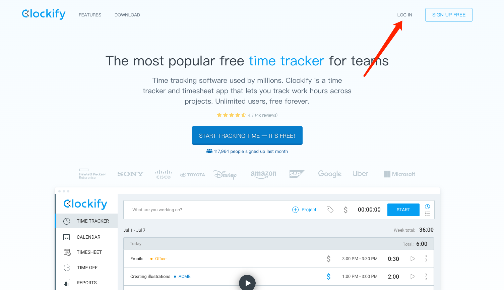
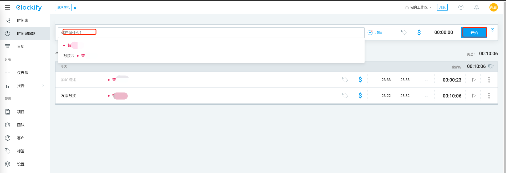
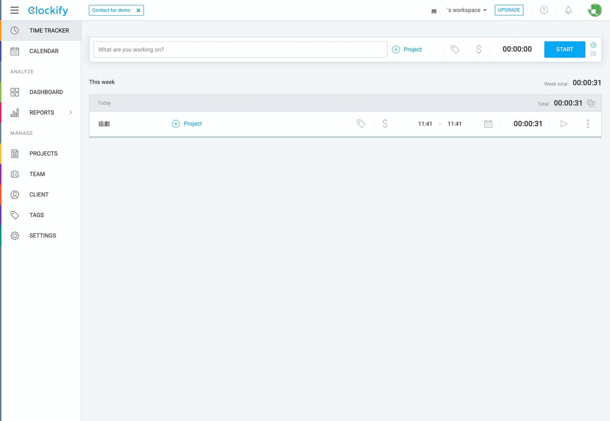
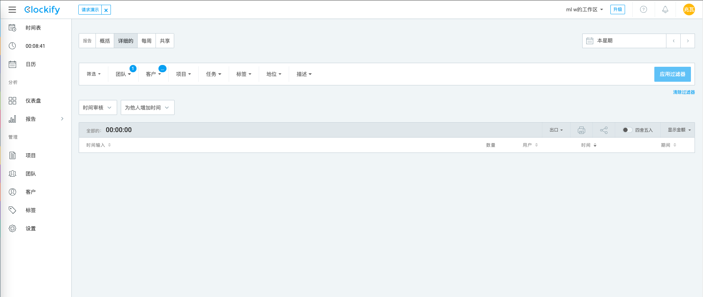
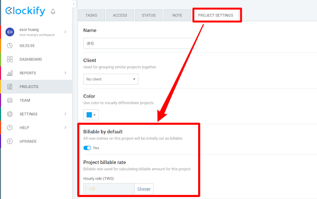
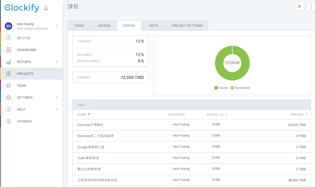
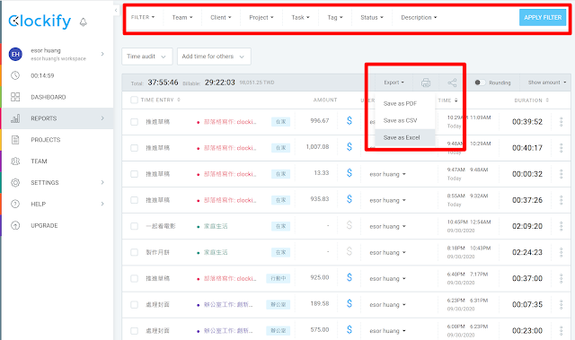
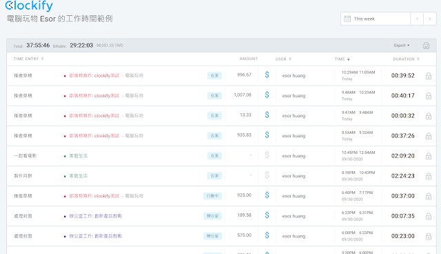

当身为接案工作者菜鸟的你被问到「要花多久时间才能完成？」的时候。是否不知道该如何回答、或胡乱报个交付日期呢？有没有被邮件与讯息提醒打乱工作步调、频频分心？
使用计时器可以解决这些问题。如果你正在寻找一款介面简洁、不看使用说明就能快速上手统计从个别工作项目到整个项目的计时器，Clockify是蛮实用的选择。本文将分享使用计时器的好处，为何选择 Clockify 这个线上计时器，以及免费版功能的使用方法。
它可以安装在电脑或手机上，帮你计时并统计各种活动所花费的时间，还能建立专案及团队，让你完整地管理及了解时间的分配，是个相当实用的工具，支持了网页/Windows/Mac/iOS/Android多种平台，让你随时随地都能追踪管理时间，大家不妨也来试用看看吧！
如果没有评估过自己在工作项目上需花费时间，抑或是不了解团队成员在工作项目上需要花费多少时间，而让报价工时少于实际投入的话就可能造成亏损。即使总工时没有超过预估，如何按照自己与团队成员的工作空档来规划项目排程，也是在接案交涉期评估是否能成功接案不可或缺的。
看到浏览器页面及页签上的时间一直在跑，可视化的时间流逝感会影响心理层面，刺激自己必须专心在眼前正在做的案子上、减少想去查看新进邮件或讯息的干扰，进而提升工作效率。另一方面也是提醒该让眼睛休息、起身活动一下了。
记录并检视工作领域所分配到的时间与产出价值，调整自己的生活平衡点。
虽然只有英文版介面，但没有艰涩的用字文法。各个可编辑栏位都能输入并正确显示正体中文。
初始使用网站时有导引文字提醒使用者操作计时功能，就算不看教学影片或网站文件也会操作。
免费版就能满足各种计时计费的需求，不仅报表及团队协作功能一并奉上，而且一个帐号就能创建多个工作区。


Step 3：点击STOP，计时器停止，产生本事件计时结果。
Step 4：稍后想对同样的事件接着计时的话，只要点击三角形图案就会接续计时。同一天内同一事件的多次纪录会汇集成一笔总览并在事件名称左侧以数字表示有多少笔纪录，当我们点击日历图案就会显示所有纪录供查看每一次的时间与时长，然后再次点击日历图案就会将所有纪录收合起来。如果一周内有数天进行同一事件的计时，则总览涵盖的纪录范围会从一天扩大到一周。

Step 5：点击事件名称右侧的Project可以设定项目名称，如果其他事件也是属于同一个项目、在点击Project会显示所有可选的名称再从中挑选就可以。
Step 6：点击Project右侧的标签图示可以设定标签名称，可加入一个或是多个标签，可赋予事件个性化特征来帮助分类或搜寻类似的事件。
Step 7：点击标签右侧的金钱符号可以将本事件定义为计费(蓝色) / 不计费(浅灰)。

CALENDAR：可浏览本周Week或是本日Day的工作进度，要是想看其他日期的工作纪录，点击右上方的日历图案来设定日期区间即可。也可以串接自己的Google/Outlook日历，不过酒喵是独立作业就省略操作这个功能，日后有Teammates团队成员时再来使用可检视团队行程表。
DASHBOARD：检视各专案在某个期间的工作时长纪录的资讯主页。
REPORTS：可设定不同条件来汇出工作时长报表。
PROJECTS：可设定不同条件浏览指定项目的状况。
TEAM：设定团队成员与群组。
CLIENT：设定客户名称。
TAGS：除了先前Step 6提到从事件直接设定个性化标签之外，也能在这里把各种标签名称都先设好或进行编辑。
SETTINGS：对网站介面显示进行细节设定的主要页签有GENERAL跟PERMISSIONS两个，INTERGRATIONS是跟其他软体整合使用或外挂推荐有关，读者可以自行调整设定。例如想要设定时薪为250新台币的话，在GENERAL页签下的Workspace billable rate改成250、Currency改为TWD，待切换到REPORTS的Summary摘要报告时系统会自动计算收费事件的工资总金额。
以上功能都是在同一个workspace中去设定，如果某天觉得案子太多、或是想要根据不同情境来做时间管理，可点击画面右上方的倒三角形叫出WORKSPACES 功能，再点击Manage之后进入WORKSPACES管理画面来创建新的工作区。
Clockify 免费版可以进行项目、任务的拆解与设定，切割出具体的任务，以及项目费用计价。
满足个人工作者、团队工作者的精细任务工时追踪、费用追踪的需求。
我们先设定好自己要追踪的项目、任务，这样计时的时候就能像前面所说的直接选择。进入「 Projects 」页面，利用右上方的「新增专案蓝色按钮」，就能新增一个一个专案。
点进某一个专案的专属页面，在「 Tasks 」分页，可以利用右上方的「输入任务：Add按钮」，新增一个一个独立要计时、计费的任务。
「 Clockify 」的免费版也有协同合作功能，可以邀请最多5 位团队成员，并且在这里邀请他们加入专案、分配工作任务、设定工时时间等等。
来到专案的「 Project settings 」页面，可以在「 Project billable rate 」中，按下「 Change 」设定「每小时的费用」。
例如时薪要用每小时6000 计算的话，可以在这里输入，之后就会帮我们统计到底花了多少时间，需要收取多少费用，甚至列印出、汇出统计报表。

进入专案的「 Status 」页面，可以看到这个专案目前的计时结果：
这个专案目前的总工时，每个任务的目前工时。
这个专案目前要收取的总费用，每个任务的费用。
这个专案目前的完成进度（如果前面有设定预估工时的话）。

最后，来到「 Clockify 」的「 Reports 」页面，这边有两个用途：
让我们「导出报告」
让我们快速修改每一条时间表
我建议切换到「 Detailed 」模式，这时候会显示成一份像是试算表的表单，每一条都可以直接编辑修改。
如果要导出，可以先利用上方的「 Filter 」功能，过滤出自己需要的专案、任务、标签等分类。然后把过滤后的报表，汇出成Excel、 PDF 档案。

甚至也能简单地把过滤后的报表，直接「线上分享」，例如这是我的测试范例。

对于导出的报告内容包括项目总工时、总报价、每个工时的明细，包括具体干了啥、谁干的；对于自由职业者作为项目报价清单很合适。
具体使用案例参考 找我帮你做事，如何收费？
总结来说，Clockify除了尚未中文化之外，免费开放的功能是十分强大的，能让独立接案者轻松管理自己的工作安排与时长，就算要扩大团队协作成员也很容易、不需投资额外的软件导入时间。简洁又可弹性设定的资讯图表是掌握自己工作进度的好帮手，而经过计时才能举证产出一篇文章可是要花上很长时间的呀。
[1] Clockify: https://clockify.me/[2] https://clockify.me/: https://clockify.me/[3] 找我帮你做事，如何收费？: https://www.ixiqin.com/2022/05/17/looking-for-me-to-help-you-do-things-how-to-charge/